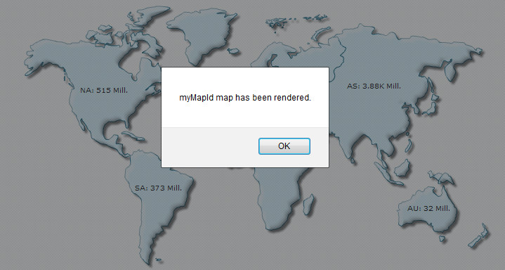

| Listening to events |
|
FusionMaps XT uses FusionCharts JavaScript Class that takes care of all the products of FusionCharts Suite XT including FusionMaps XT. The FusionCharts JavaScript Class allows you to listen to a host of events raised by the map. Some of them are raised When:
FusionCharts provides two ways of listening to events:
In this page, we will see how both the methods work using simple samples. FusionCharts raises simple events that can be listened at global scope by defining JavaScript functions. You need to create a JavaScript function of the same name as the name of the event. The map will pass required event parameters to this function. Let's create a small sample using the FC_Rendered event which is raised when a map completes rendering for the first time. The map will pass the DOMId of the map to the function, which we will then show in a JavaScript alert as shown in the image below:  <html>
<head>
<title>FusionMaps XT - listen to DrawComplete event</title>
<script type="text/javascript" src="Maps/FusionCharts.js">
</script>
</head>
<body>
<div id="mapContainer">FusionMaps XT will load here!</div>
<script type="text/javascript"><!--
var myMap = new FusionCharts( "Maps/FCMap_World.swf", "myMapId", "400", "300", "0" );
myMap.setXMLUrl("Data.xml");
myMap.render("mapContainer");
function FC_Rendered(DOMId)
{
alert ( DOMId + " map has been rendered." );
}
// --></script>
</body>
</html>
In the above code, we have generated a map with data from an XML file. Next, we created a JavaScript function, FC_Rendered, which takes the parameter, DOMId. The map when it completes rendering, calls this function as FC_Rendered event and passes it's DOMId to the function's parameter. We alert this value as shown in the above image. Note that this method is simple to implement but has some serious limitations. The listeners are always to be defined globally for all maps. So, you cannot set individual event listener for separate maps. However, using the if/switch statements on DOMId you can differentiate between maps. Moreover, you need to define the function name with the same name as the event's name. To know the list of names of simple events raised by maps and the parameter value that each event passes to the event listener read API Reference > Events page.
Event Parameters
Each event sends parameters to event listener functions. In simple event model, the parameter is received mostly as a string containing the DOMId of the map that raises the event. The FC_Exported event sends an Object containing export success status, etc. The FC_Resized event sends DOMId, new width, new height, original width and original height as 4 linear parameters. Please go through the Events page for more details on parameters of each event. Using JavaScript advanced event registration model The FusionCharts JavaScript Class provides a standard cross-browser compatible function, addEventListener(), to register events. You can use this function to attach event listener to individual maps or to all maps globally and take actions accordingly. Moreover, for each event an event-alias is defined to ease the process of listening to events. For each event two standard argument objects - eventObject and argumentsObject are provided to the event listeners. Let's create a small sample that tracks the DrawComplete event of a map. The DrawComplete event is raised when a map has finished drawing of all visual elements. |
<html>
<head>
<title>FusionMaps XT - listen to DrawComplete event</title>
<script type="text/javascript" src="Maps/FusionCharts.js">
</script>
</head>
<body>
<div id="mapContainer">FusionMaps XT will load here!</div>
<script type="text/javascript"><!--
var myMap = new FusionCharts( "Maps/FCMap_World.swf", "myMapId", "400", "300", "0" );
myMap.setXMLUrl("Data.xml");
myMap.render("mapContainer");
function myChartListener(eventObject, argumentsObject)
{
alert( eventObject.sender.id + " has completed map drawing" );
}
FusionCharts("myMapId").addEventListener ("DrawComplete" , myChartListener );
// -->
</script>
</body>
</html>
|
|
In the above code, we first create a World map with DOMId as myMapId. Thereafter, we add an event listener for DrawComplete event. The function myChartListener is set to listen this event. FusionCharts("myMapId").addEventListener("DrawComplete" , myChartListener);
The event listener receives two event arguments. The event argument contains the reference to the sender or the event-raiser object, which is the map itself. We show the id of the sender object using the JavaScript alert() function from eventObject.sender.id property. function myChartListener(eventObject, argumentsObject)
{
alert( eventObject.sender.id + " has completed drawing of map" );
} |
|
Apart from assigning event listeners to individual map, you can also attach an event listener globally using the FusionCharts.addEventListener()static function. To know more on each event raised by FusionCharts and FusionCharts JavaScript Class, event arguments passed to each event, event alias, etc, please refer to the Events page in API section. |
|
Event Parameters in advanced model
Each event sends parameters to event listener functions. In advanced event model, two event argument Objects are sent to event listeners. The properties contained by the arguments are as follows:
Please go through the Events page for more details on parameters of each event. |